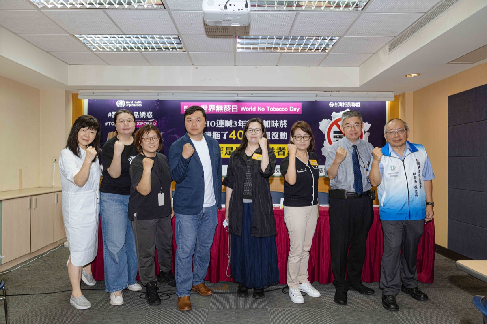
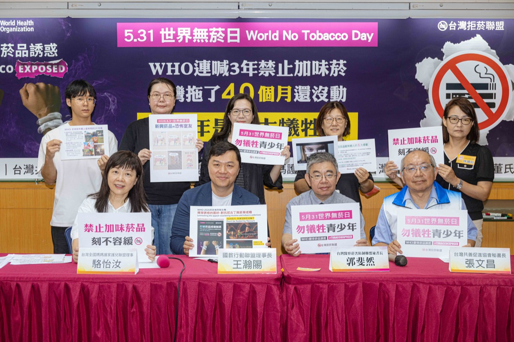

台灣拒菸聯盟 5.31 世界無菸日記者會──落實禁加味菸，勿讓青少年成最大犧牲者
WHO 連喊 3 年禁加味菸，台灣卻拖 40 個月還沒公告

活動資訊
- 日期
- 2026 年 5 月 29 日（五）上午 10:00
- 地點
- 台大校友會館 3B 會議室（臺北市中正區濟南路一段 2-1 號）
- 主辦
- 台灣拒菸聯盟
- 共同召開
- 國教行動聯盟 · 台灣共善促進協會 · 全國家長會長聯盟 · 台灣全國媽媽護家護兒聯盟 · 董氏基金會 · 台灣醫界菸害防制聯盟
- 主題
- 響應 WHO 2024-2026 世界無菸日「揭穿菸品誘惑」主軸，呼籲落實禁加味菸品
關於這場記者會
5 月 31 日世界無菸日前夕，台灣拒菸聯盟於台大校友會館舉行記者會。WHO 接連三年（2024-2026）揭露菸品藉風味添加物誘惑年輕人上癮，今年更推出「別被加味菸品騙了」影片，把新興菸品比喻為「恐怖室友」。反觀台灣，自《菸害防制法》新法 2023 年上路、明定加味菸應予禁止，卻已拖延超過 40 個月，政府遲未依法公告「除菸草原味外，禁止所有加味菸品」。
聯盟指出，國健署 2023 年首次預告僅禁 4 種口味、2024 年改為禁「27 種成分」，但菸商仍可從上千種添加物提煉相同口味，「破口愈補愈大」。在 0-18 歲津貼政策討論之際，拒菸聯盟呼籲，照顧下一代應先從影響年輕人健康最深的禁止加味菸品做起。
出席代表與發言重點
尼古丁是大腦毒素，直接傷害青少年仍在發育的前額葉皮質，干擾認知、學習與衝動控制；新興菸品以「加味」降低戒心，成為青少年接觸菸品的入門磚。
引述 WHO 指出，近九成青少年吸菸者首次嘗試的就是加味菸；歐盟、加拿大、巴西等國皆已立法禁止加味菸品，台灣應盡快跟上。
台灣禁加味菸政策還掛零，卻已讓加味加熱菸上市販售，菸草產業趁機以口味行銷各式新興菸品，「嚴格管制新興菸品」恐淪空談。
WHO 最新資料顯示全球有 1,500 萬名 13–15 歲青少年使用電子煙；若推動無菸世代，應涵蓋加熱菸、尼古丁袋等所有新興菸品。
WHO 連三年以「揭穿菸商真面目」為主軸，強調菸草公司以加味菸品、魅惑行銷、酷炫裝置吸引年輕人，今年更把新興菸品比喻為「恐怖室友」。
「無菸城市」不等於設置「負壓吸菸室」；戶外吸菸區應遠離建物出入口、主要通道與人潮聚集處，降低兒童、青少年接觸吸菸畫面的機會。
三項訴求
- 依法公告「除菸草原味外，禁止所有加味菸品」，加味加熱菸下架。
- 建立「衛生福利部新興菸品查緝平臺」，確實監控新興菸品的魅惑行銷。
- 推動無菸品世代。
活動花絮

